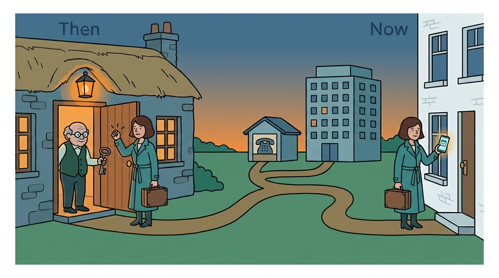

Preface
From Inn Door to Instant Book: How Stays Got This Complicated
AI-assisted: written with Claude Code and Codex, images generated with the Gemini API. How this works

Image generated by Google Gemini (gemini-3-pro-image-preview)
Preface
AI-assisted: written with Claude Code and Codex, images generated with the Gemini API. How this works

Image generated by Google Gemini (gemini-3-pro-image-preview)